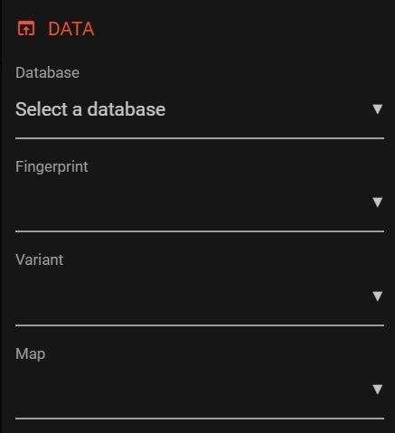
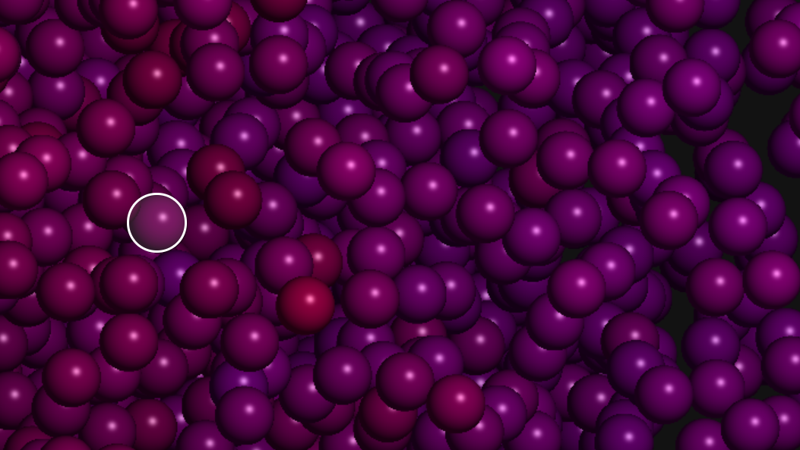
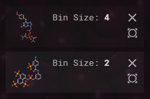

You may enter one search query per line. A search query might include the ID, the SMILES or the fingerprint of
a compound. Each query can return multiple matches. The search is case-sensitive (ABC is not equal to abc).
Project Compounds
You may enter one compound per line. A compound has to be a valid SMILES string.
location_searching K-Nearest-Neighbour Search
Use this tool to search the k closest neighbours in the loaded database for each data point in the selected layer.
info_outline Welcome to Faerun
This website uses cookies to ensure you get the best experience on our website. Learn more
If you are using Internet Explorer, please switch to Edge, Chrome or Firefox. IE will not display all structures and does not support range sliders.
If you wish to use advanced features such as custom data projection and KNN searching, please consider reading the full tutorial.

1. To get started, open the main menu by clicking the hamburger menu to the top right of the screen.
2. Select a database from the select element. All available fingerprints will be displayed once a database is selected.
3. Select a variant (the positions of the vertices). Available maps will be loaded.
4. Select a map (the color of the vertices). The menu closes automatically after selecting a map.

5. You then may explore the loaded dataset. Whenever you hover a datapoint, a preview is shown to the top left.
6. Data points can be selected by double-clicking. They are then added to the selected container on the left.

7. Selected data points show up in the bin container. They can be removed or centered upon clicking the respective button.
8. With SureChEMBL data, a data point (bin) can further explored by clicking it. The details will be openend in a new tab (might take a couple of seconds).